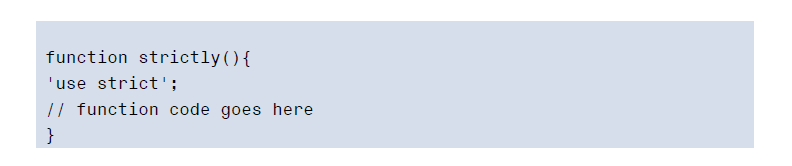
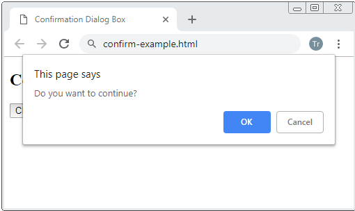
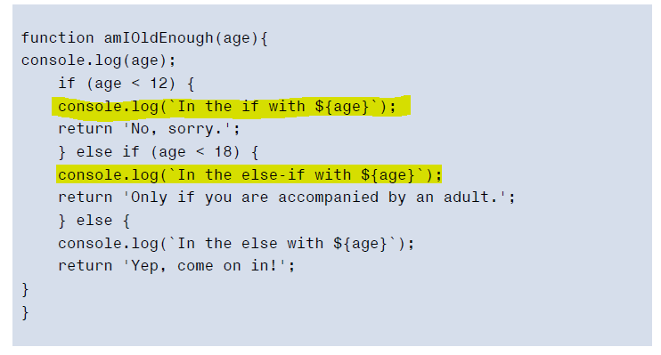

Errors, Exceptions, and Warnings
- System error - there’s a problem with the system or external devices with which the program is interacting.
- Programmer error ― the program contains incorrect syntax or faulty logic; it could even be as simple as a typo.
- User error ― the user has entered data incorrectly, which the program is unable to handle.
Errors
Exceptions
Warnings
- warning can occur if there’s an error in the code that isn’t enough to cause the program to crash.

Strict Mode
- Writing code in strict mode can also help improve its clarity and speed, since it follows conventions and will throw exceptions if any sloppy code practices are used.
- Strict mode simply requires the following string to be added to the first line of a JavaScript file 
Debugging in the Browser
- is the process of finding out where bugs occur in the code and then dealing with them.
The Trusty Alert
- The most basic form of debugging is to use the alert() method to show a dialog at certain points in the code.
- alert() 
Using the Console
- Most modern JavaScript environments have a console object that provides a 360 JavaScript: Novice to Ninja, 2nd Edition number of methods for logging information and debugging. 